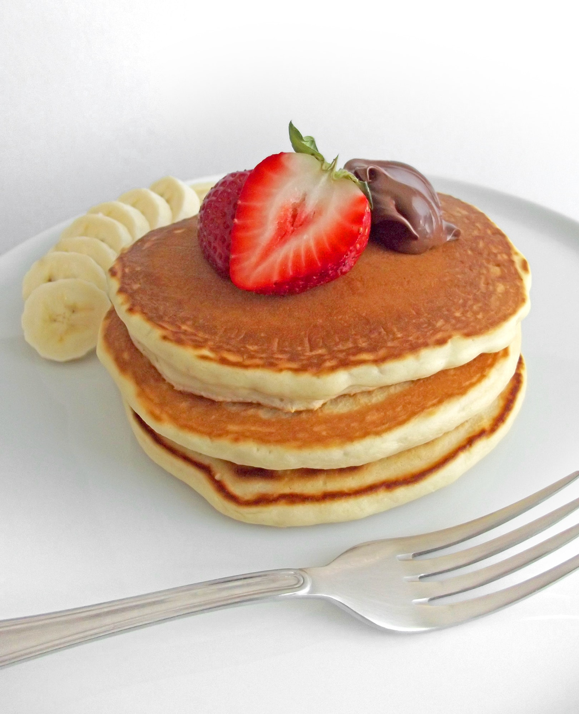

Tortitas
Ingredientes para una tortitas:
- -harina
- -Leche
- -Azúcar
- -Huevo
- -Levadura en polvo (opcional)
- -Una pizca de sal
- -Esencia de vainilla
Modo de preparación resumido:
- -Mezclar harina, leche, huevo, azúcar, levadura en polvo, sal y esencia de vainilla en un tazón.
- -Calentar una sartén y engrasar con mantequilla.
- -Verter pequeñas porciones de la mezcla en la sartén caliente.
- -Cocinar hasta que aparezcan burbujas en la superficie, luego dar la vuelta y cocinar el otro lado.
- -Repetir hasta que toda la masa se haya utilizado.
- -Servir las tortitas con tu sirope o toppings favoritos.
- ¡Ahora puedes disfrutar de deliciosas tortitas! Puedes personalizarlas con frutas, miel, o cualquier otro acompañamiento que te guste.